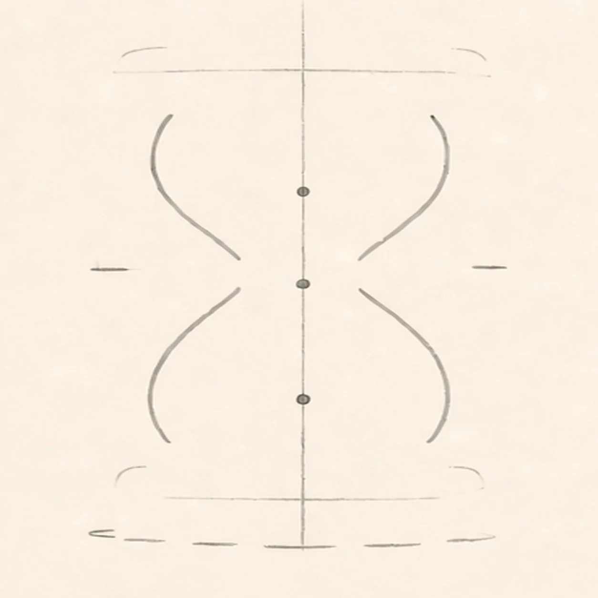
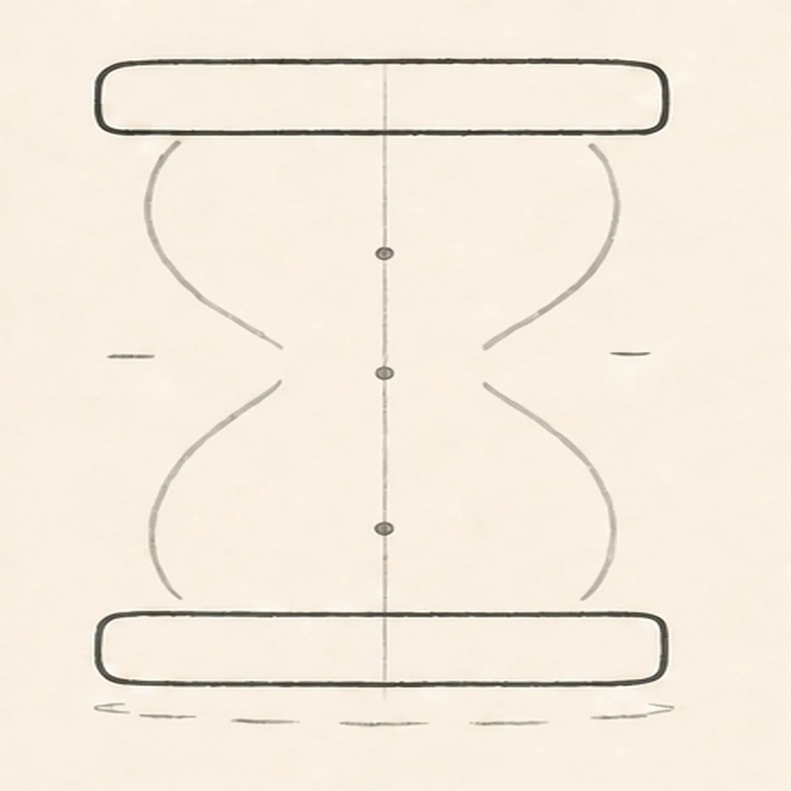
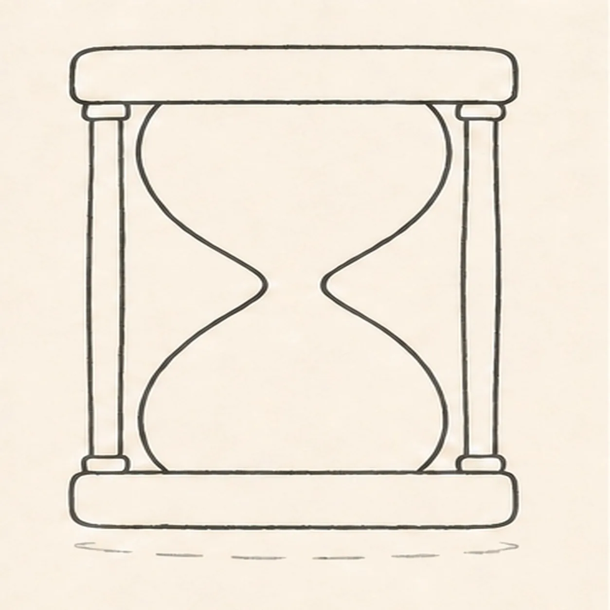
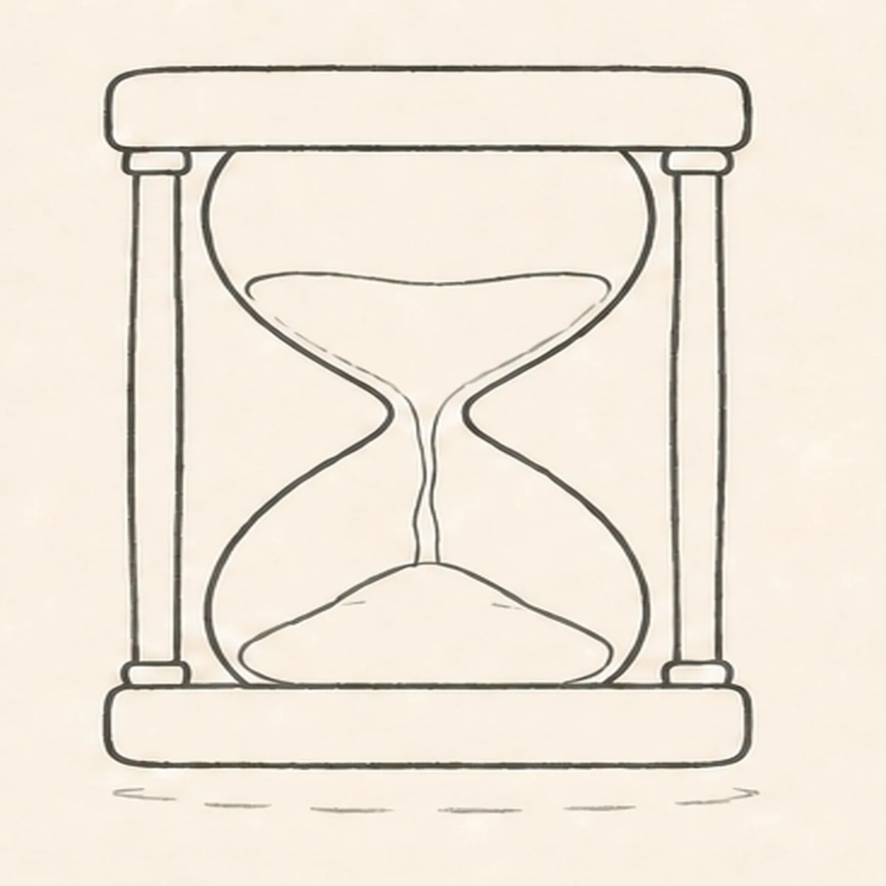
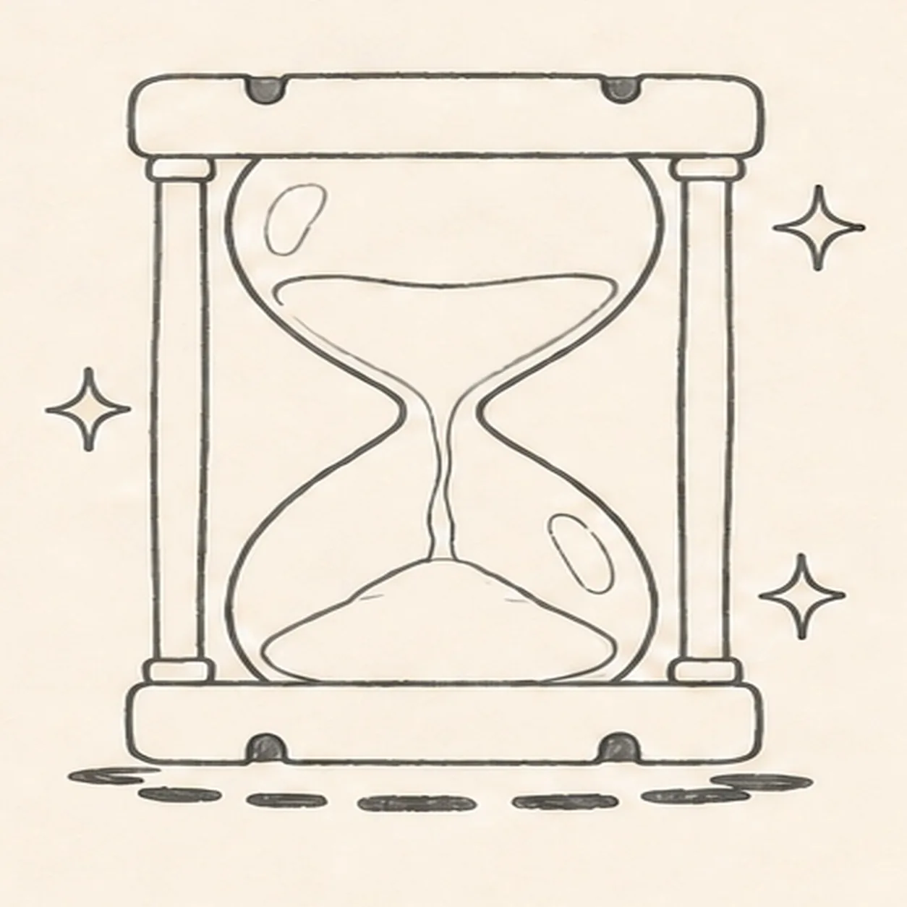
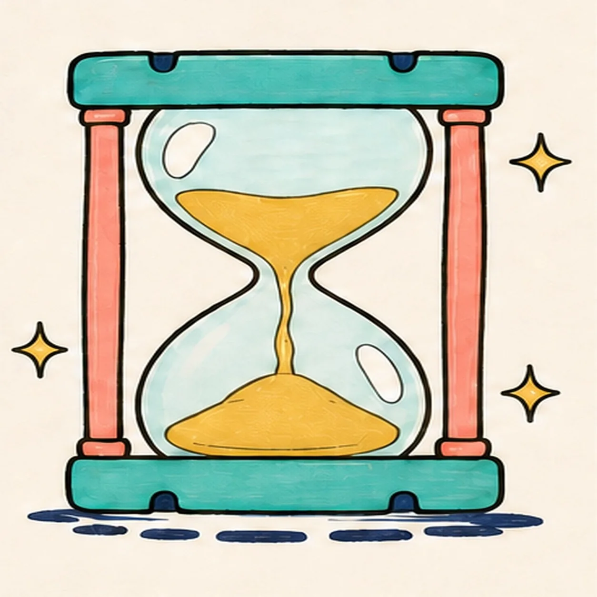
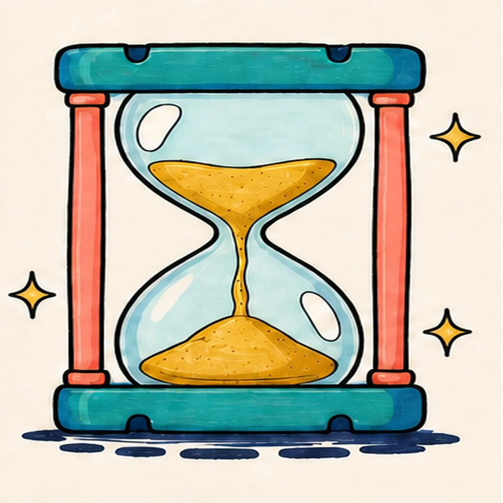

Felt-tip marker mode
Let's draw an hourglass
Treat this as one playful practice round: sketch the idea loosely, simplify the shapes, then commit with confident marker outlines and bright fills.
-
01

Map the timer
Use pale pencil to place one upright center axis, two open wide cap guides, one open pinched-waist glass route, exactly two pillar ticks, three sand placements, and one broken shadow route.
Marker tip: Keep both cap guides open and light. Match their widths on the same axis, then place the upper bed, falling stream, and lower pile along the centerline.
-
02

Shape both caps
Wrap the two wide guides into equal rounded top and bottom caps centered on the same axis while preserving every glass, pillar, sand, and shadow placement.
Marker tip: Compare the left and right ends before closing each cap. Keep both widths equal and the top and bottom edges parallel.
-
03

Connect glass and pillars
Shape one pinched two-chamber glass vessel and wrap exactly two outer side pillars between their reserved cap anchors.
Marker tip: Bring both glass sides to one narrow centered waist. Attach each pillar firmly to the same cap ends instead of letting it float beside the frame.
-
04

Draw the flowing sand
Turn the three placements into one curved upper sand bed, one narrow centered falling stream, and one rounded lower sand pile inside the glass.
Marker tip: Keep the stream thin at the waist and aim it at the peak of the lower pile. Leave open glass around all three sand forms.
-
05

Add shine sparkle and frame detail
Reserve exactly two open-paper glass highlights, add exactly three four-point sparkles around the frame, place exactly four small cap notches, and clarify the broken shadow.
Marker tip: Place one highlight in each chamber, two notches on each cap, and keep the three sparkles outside the frame so every count stays readable.
-
06

Ink and map the colors
Ink only established contours and map teal, coral, golden yellow, pale aqua, and deep navy into every planned region.
Marker tip: Ink the narrow waist and pillar attachments first. Pull longer strokes across the caps, work around both highlights, and preserve all three sparkles.
-
07

Pull the marker texture
Clarify only the established marker streaks, glass depth, sand texture, cap edges, pillar accents, highlights, notches, sparkles, and shadow.
Marker tip: Use the darkest accents where the pillars meet the caps. Keep the glass pale and the sand grain visible without crowding the flowing stream.
-
08
![Handmade felt-tip marker drawing of one face-free upright cartoon hourglass with exactly two rounded teal caps, exactly two attached coral side pillars, one pale-aqua pinched glass vessel, one curved upper golden-yellow sand bed, one centered falling sand stream, one rounded lower sand pile, exactly two open-paper glass highlights, exactly three yellow four-point sparkles, exactly four deep-navy cap notches, thick imperfect black outlines, visible directional marker texture, and one broken deep-navy ground shadow](../assets/cartoon-hourglass-with-flowing-sand-finished-v1.webp)
Finish the cartoon hourglass
Complete only the established marker fills and selectively strengthen the same caps, glass, two pillars, three sand forms, two highlights, three sparkles, four notches, and shadow.
Marker tip: Count two caps, two pillars, three sand forms, two highlights, three sparkles, and four notches, then stop before the handmade fills become flat and digital.


![Handmade felt-tip marker drawing of one face-free upright teal cartoon walkie-talkie leaning slightly right with one top-left antenna, exactly two coral top knobs, one attached coral push-to-talk button on the upper-left side, one blank pale-aqua rounded screen with a dark bezel, exactly five horizontal deep-navy speaker slots, exactly two yellow radio-wave arcs above the antenna, exactly two open-paper case highlights, exactly four lower grip ribs arranged two per side, thick imperfect black outlines, visible directional marker texture, and one broken deep-navy ground shadow](../assets/cartoon-walkie-talkie-finished-v1.webp)